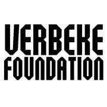

- 2022 -

NI (National Instruments)
Technical Support Engineer Intern
Munich, Germany
NI develops automated test and measurement systems, and it is widely recognized for its LabVIEW software,
and for their ambitious engineering.
I developed and designed an application that aimed to reduce energy usage at the office which now saves up to €50K annually worth of energy.
This web application enables NI employees worldwide to remotely start their test systems so that they do not need to be powered on 24/7, and I achieved it by
by setting up the necessary network infrastructure composed by IoT servers distributed across all subnets, and then broadcast WOL packets accordingly.
Other responsibilities include providing support to customers, as well as users at the NI Community forum.
Wiska GmbH
Project team leader, bachelor's thesis
Hamburg, Germany
Wiska manufactures electrical equipment for shipbuilding and other diverse industries. I, alongside a team of 3 other
European students, worked on a project presented by the company, which aimed to reduce carbon emissions from
their manufacturing processes. Using the provided data by our manager and after thorough research on greenhouse gas
calculations, we created a GHG (Greenhouse Gas) Protocol guide for the company to follow.
During the whole project I assumed the position of team leader, and I was responsible for follow-up presentations
at the company, as well as for the organisation of the team.
- 2021 -
Nironet
English teacher
Barcelona, Spain
Nironet is an academy that offers various courses to both students and adults. I worked here for more than a year,
in which I mainly taught English to adult couples, but also tutored English to Baccalaureate students and high-schoolers,
as well as teaching Spanish to foreign adults.
- 2020 -

Verbeke Foundation
Staff member
Antwerp, Belgium
Verbeke Foundation is a Belgian museum of contemporary art. During my time here, and with the help of other co-workers
and volunteers, I assisted in many various tasks,
including serving at the canteen, assisting in the coordination of big events such as weddings and business meetings,
offered customer support to visitors, and kept the whole place clean and hygenic.